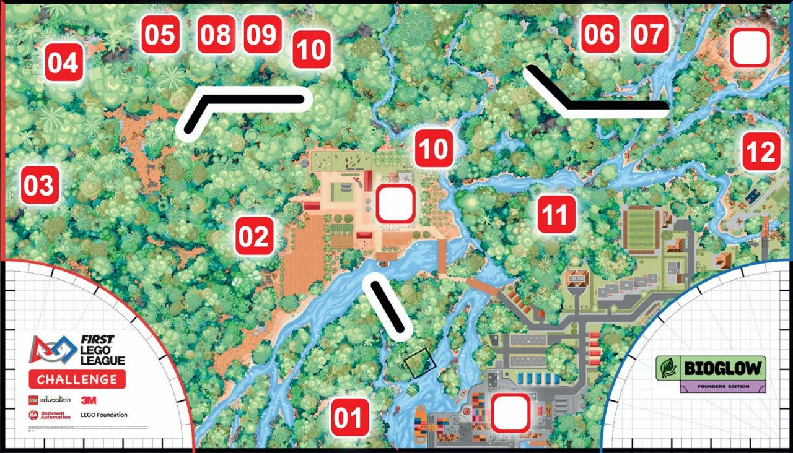

Homework — Week of September 28, 2026
Due: Friday, October 2 robotics meeting — be ready to demo your picked mission.
1. Understand every block in your program
You must understand every block in your program and be able to explain to your team how it works. Do not use a block until you fully understand it.
The test: you should be able to re-create your program from scratch.
On Friday, anyone may be asked to explain any block in their program.
2. Best practices
- Always use move-by-distance blocks (not by rotation). You may need to learn how to use by-distance blocks first.
- Always use gyro-guided moves and turns. The gyro keeps the robot straight and turning accurately, even when wheels slip.
3. Watch these videos
Watch at least these four:
- FLL Masterclass Part 1: Robot Design By A Championship Coach — Creator Academy Australia
- FLL Masterclass Part 2: 10 Tips to Make Your LEGO Spike Prime Robot Drive Straight — Creator Academy Australia
- FLL Masterclass Part 3: 10 Essential MyBlocks For The Robot Game — Creator Academy Australia
- How to be Consistent — BioGlow Mission Inspiration — Zachary Trautwein
4. Solve your picked mission on the field
Schedule time with the parent hosting the field (details in the parent group chat) to come over and solve your picked mission on the real map.
You need to define the exact starting point inside the launch area. Write down the grid position and which way the robot faces, and take a photo, so you can start from the same spot every time.

5. Next week: Robotics Friday
Friday, October 2, 6:00 – 8:00 pm (location in the parent group chat)
| Time | Activity |
|---|---|
| 6:00 – 6:30 | Free build / play time |
| 6:30 – 7:00 | Every team member demos how their picked mission can be solved |
| 7:00 – 8:00 | Make improvements and test on the map |
Bring: a charged robot, a laptop, and your program saved.
To parents: please feel free to drop off and pick up for the robotics meeting.